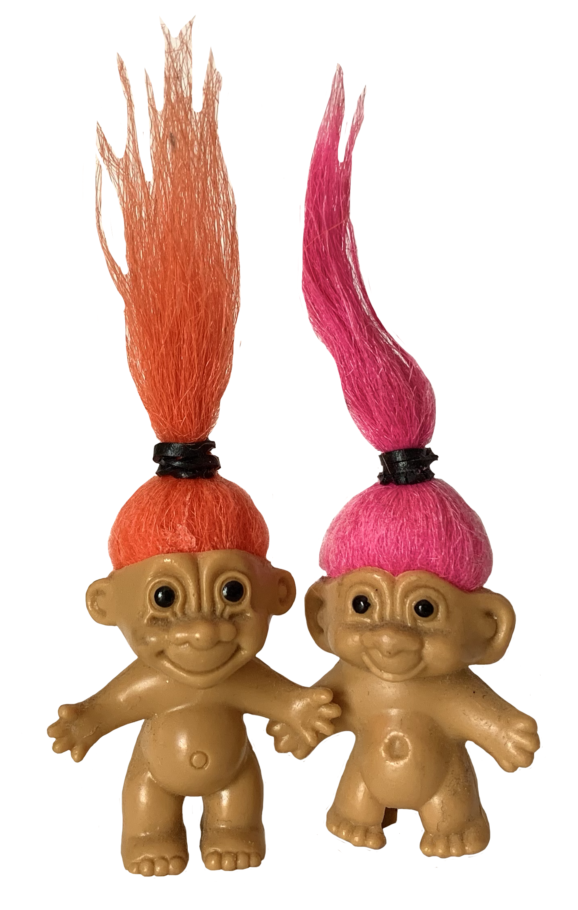

My drawing teacher from high school has an extensive collection of random objects that he has accumulated over the years. Some of them have been acquired from the trash, thrift stores, or things that no longer work from his house. One of those objects being troll dolls. One night at the studio, I took two just for the hell of it. He probably had at least 30 scattered all over the drawing studio so I figured he wouldn’t notice, and it would be my token to remembering his collection of things after I graduated. These ones weren’t chose for any particular or specific reason, but I remember thinking the color and style of their hair looked good together; like brother and sister maybe. In my dorm in New York, back when school was in person, they stood on my window still amongst my plants and my own objects that I have accumulated. Nowadays, they still stand side by side on my windowsill but in my childhood bedroom, again, next to my plants and random accumulated objects.